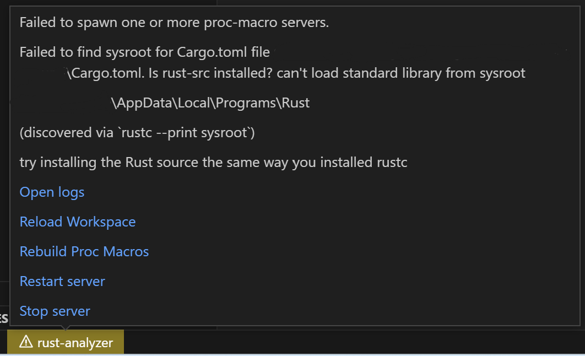
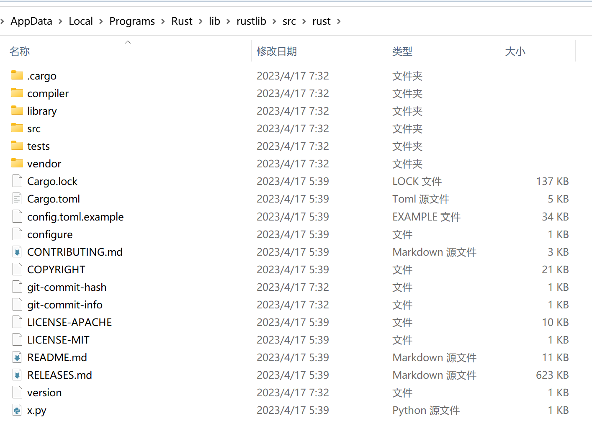

如何手动安装rust-src
2023年5月30日安装Rust，官方通常推荐使用rustup进行安装和版本管理。可如果我就是不听，一定要手动安装，官方也提供了Standalone installers。可是用这种方式安装的Rust不带rust-src，使用Visual Studio Code时rust-analyzer扩展会出现如下的错误提示：

最后一句try installing the Rust source the same way you installed rustc是解决问题的关键。对于如何修复这个错误，Google并不能找出直接的答案。大多数解答都是针对rustup安装错误，安装rust-src的方法也只有使用rustup。
解决方法
在Standalone
installers下载页面的底部，可以下载对应当前版本的rust-src的压缩包。之后需要在Rust安装位置/lib/rustlib/下创建一个src文件夹，然后将压缩包里的rust-版本号-src文件夹解压到src目录下，并将rust-版本号-src重命名为rust。
